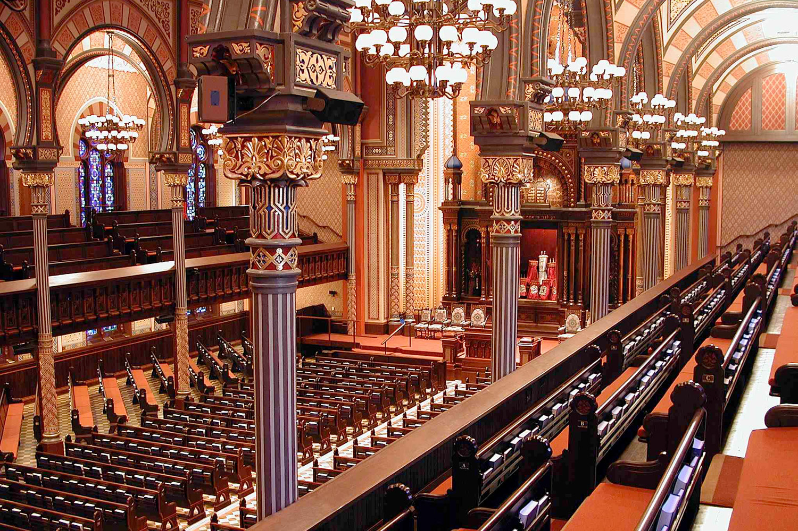
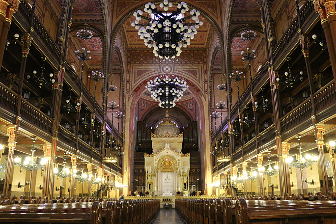
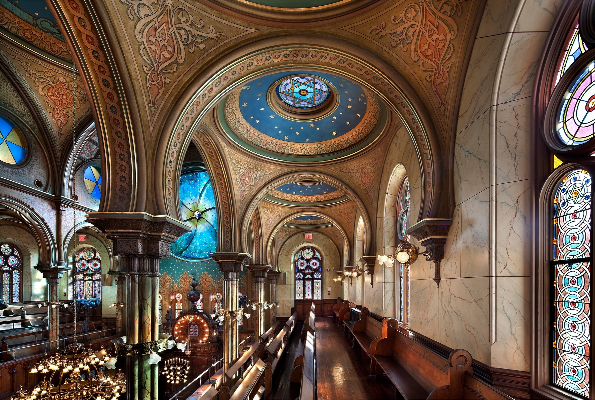
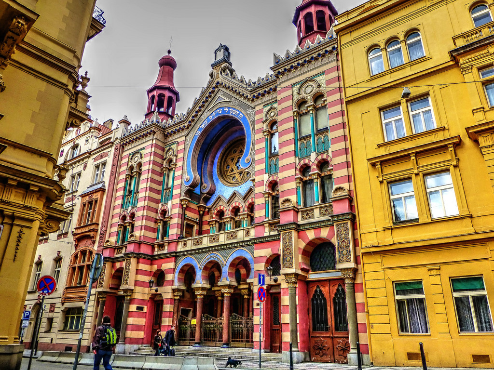
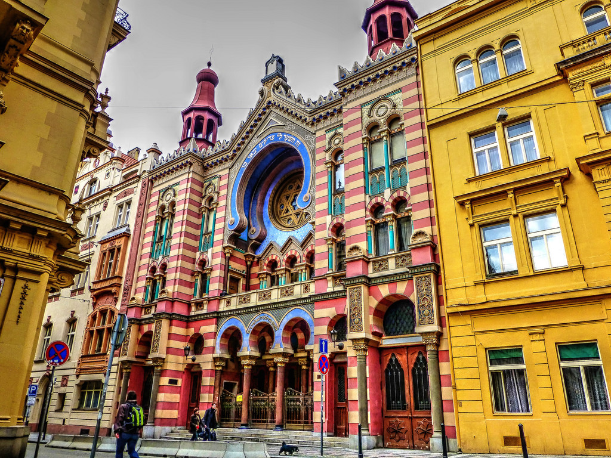
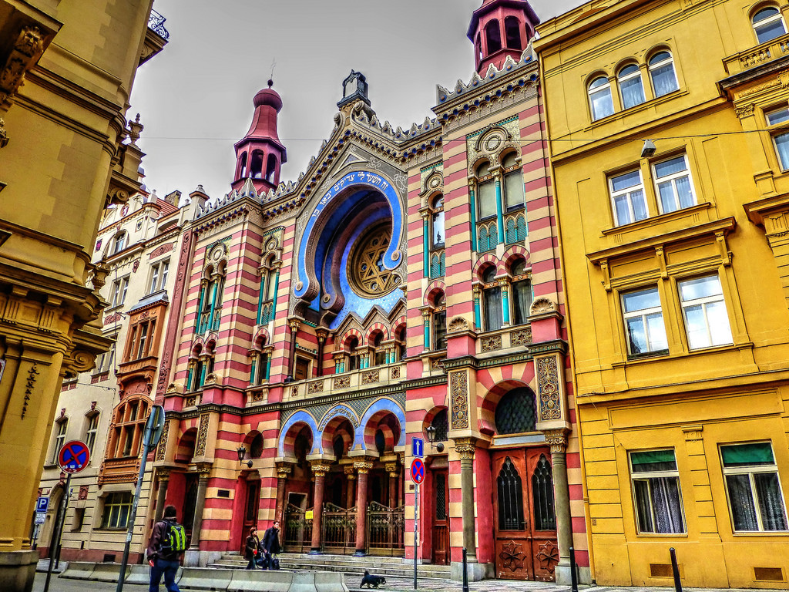

Judaism originated in the Middle East nearly 4,000 years ago. Judaism is founded on the covenant God made with Abraham and the Jewish people. Abraham, Isaac and Jacob, commonly known as the Patriarchs, are the ancestors of Judaism. The three main branches of Judaism are Orthodox, Conservative, and Reform. Today, roughly 14 million people practice Judaism.
- Of the 14 million Jews in the world, 5.5 million live in Israel, around 6 million in the US and about half a million each in the UK, France, South America and the former Soviet Union.
- Jews are not a race, they often describe themselves as a 'people', with an identity which includes elements such as religion, culture, language and historical memory.
- The Hebrew Bible can be described as a library of inspired literature. It was written over a period of nearly a thousand years.
- Jews believe in a single, omniscient, all-powerful God. God's name in Hebrew is YHWH which means “I am”.
- Anyone that is born of a Jewish mother or converted to Judaism in accord with Jewish Law can be categorized as a Jew.
- In accordance with the Jewish law, Jews recite prayers three times daily, with a fourth prayer added on Shabbat and holidays. Observant traditional Jews recite prayers throughout the day while performing various acts.
- The most practiced Jewish denominations today are Orthodox, Reform, Conservative, Hasidism, and Kabbalah.
- Hanukkah is an eight day Jewish holiday starting on the 25th day of the Hebrew calendar.
JUDIASM ARCHITECTURE



 


❮
❯
Caption Text
JUDAISM FAQ
Stuff to know.
Jews are very careful about writing any Name of God. They are prohibited from erasing God’s sacred names that are written in the Torah.
Jews are advised to prevent writing the name of God casually because will put it at risk of being defaced or destroyed from lack of knowledge by others who don't share their same belief.
Kashrut is a set of Jewish laws concerning how food is prepared and eaten. Kosher food meets the standards of kashrut.
Food is not blessed by a rabbi to make it kosher, however some Jews recite blessings over kosher food before eating it. There is no “kosher-style” food or cooking. Any food is kosher as long as it follows the Jewish law.
Many components of Halloween contradic Jewish beliefs. Jews celebrate Purim, which is Jewish holiday filled with joy and laughter. On Purim, children dress up as clowns and princesses and help
out those who are less fortunate in their community. Children who participate on Purim learn the importance of giving. In contrast to Purim, on Halloween children demand candy and are encouraged to evoke fear in others.
Jews do not believe the Messiah will be crucified nor will he be a savior to the Jews by redeeming them of their sins; it is believed that the Messiah will be a mortal man and he will be the
ruler in the Holy Land over all the People of Israel. The Messiah will end all suffering and warfare will be abolished.
The Jewish calendar is based on a "lunisolar" cycle. The months are lunar and the year is adjusted to fit the solar year by adding a lunar month. A complex 19 year cycle exists to determine
when to have a leap year, a 7 year cycle to decide on the Sabbatical years, and a 50 year cycle to determine the Jubilees. The Jewish year starts on Rosh Hashanah which is the day Adam and Eve were created.
Wearing a kippah is a Jewish custom to display respect for God when praying, studying Torah, saying a blessing or entering a synagogue. This practice began in biblical times when priests were
advised to cover their heads. Traditionally, Jewish males wear a kippah at all times as a sign of recognising that there is a higher entity. Some people wear kippot of an assortment of colors and complex designs.
Yes. Converting to Conservative Judaism, Reform, Reconstructionist, or Renewal is known to be less difficult. They are all mostly welcoming and open to converts regardless of your sexuality, although
local synagogues might vary in their views. Sha’ar Zahav is a synagogue in San Francisco that is predominantly gay.
No, rabbis are experts at Jewish law but they are not priests. Jewish priests are called kohein, they are responsible for performing various rites in the Temple, such as religious rituals and sacrifices.
A kohein can be a rabbi but a rabbi doesn't have to be a kohein. Until recently, synagogues infrequently had rabbis. A rabbi’s position usually involves making decisions about the Jewish law.
Succeeding the First World War, the economy of the unsuccessful Germany was in shambles. As the German government attempted to recuperate, they instead escalated the issue by printing more money, thus creating super inflation.
Angered, the German people directed their disdain towards the bankers who were often jewish. The anger culminated into pure anti-Semitism, and by the 1930’s an individual named Adolf Hitler capitalized on the overwhelming hatred to unite the German people against
the Jewish population. Using anti-Semitic propaganda, the nazi party launched a campaign to eradicate an entire race of people.
MORE RESOURCES
- General Info: http://www.ijs.org.au/Judaism-an-Introductory-Overview/default.aspx
- General Info: http://www.commisceo-global.com/blog/a-brief-introduction-to-judaism
- More FAQs: http://www.beingjewish.com/faqs/
- More FAQs: https://jewishrecon.org/resource/faqs-reconstructionist-approaches-jewish-ideas-and-practices>
- History of Jewish Art: http://www.myjewishlearning.com/article/jewish-art-101/
- Jewish Art: https://www.khanacademy.org/humanities/ancient-art-civilizations/judaism-art/a/judaism-an-introduction
- Jewish Architecture: https://www.khanacademy.org/humanities/ancient-art-civilizations/judaism-art/a/writing-a-history-of-jewish-architecture
- Jewish Holidays: http://www.jewfaq.org/holiday0.htm
- Basic Beliefs: http://www.jewfaq.org/beliefs.htm